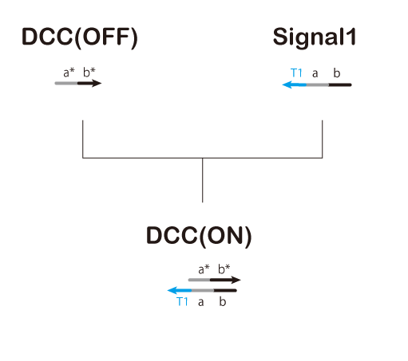
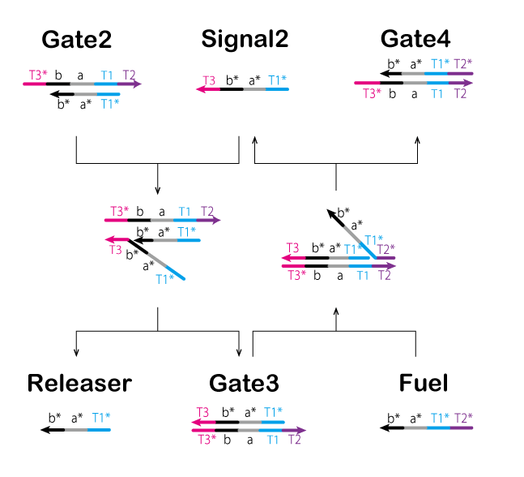
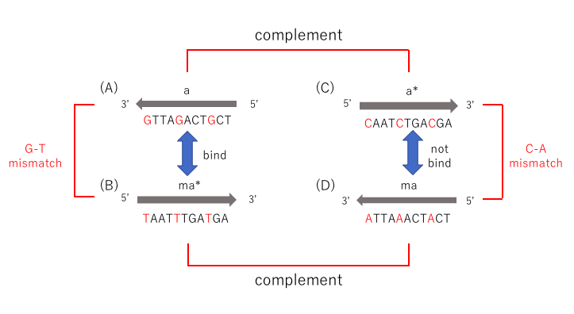
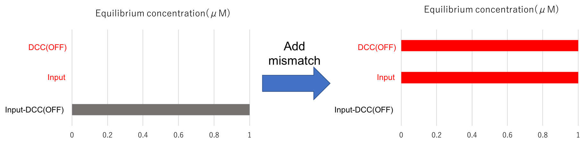
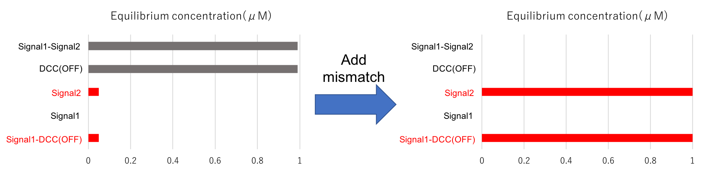

Polymerase reaction
We use the polymerase reaction as a way to absorb ATP from cells.
The polymerase is an enzyme which configuers a nucleic acid or a chain such as DNA or RNA.
In this project, we use double stranded DNA including T7 promoter squence as template,
NTP(Nucleoside triphosphate) as substrate.
In addition to, we use T7RNA polymerase which is an enzyme and makes complementary single stranded RNA
for a template DNA being a part of downstream of the promoter(Figure 1,Video 1).
Figure 1
Video 1
ON-OFF switch
About ON-OFF switch
We arranged adenine on a part of downstream of the T7 promoter to absorb only ATP as energy(Figure 2).
In addition to, we tyied to implement below three systems.
Figure 2
· amplification gate
We need high concentration DNA to stop the effect of cells.
If we implement the amplification gate, we are able to kill cells which have amount of ATP.
· ON-OFF switch
T7RNA polymerase recognizes double stranded DNA such as Figure 3(a) and starts a reaction with it.
Therefore, we set double stranded DNA state such as Figure 3(a) as switch ON state,
and single stranded DNA state such as Figure 3(b) as switch OFF state.
Thereby we are able to switch ON-OFF state of polymerase reaction.
Figure 3
· feedback regulator
Some illnesses which coused by overexpression of ATP exist.
If we implement the feedback regulator, we are able to keep level of ATP.
In addtion to, the scope of application will be wider.
A purpose of our project is to not adversely affect to normal cells. So, we implemented the ON-OFF switch in this time.
Thereby when cancer cells die, the circuits in normal cells is turned off by the ON-OFF switch.
Thus it do not load more than necessary. A scheme of ON-OFF switch circuit is shown in Figure 4.
We designed the ON-OFF switch based on strand displacement reactions.
This gate was composed of four DNA strand displacement reaction processes.
Each of these reaction processes is explained below.
First Process:
First, the circuit starts by administering Input.
In the first process, we aimed to make the models of Signal1 and Signal2
using a strand displacement reaction(Figure 5,Figure 6).
Thereby Signal1 output and singl stranded DCC cause hybridization and they change double stranded.
In other words, DCC is changed ON state into OFF state.
① T0* of Gate1 is bound with T0 of Input.
② Gate1 and Input are effectively combined.
③ A part of Gage1 separates from the complex.
④ Signal1, Signal2, and Waste are generated by separating the components.
⑤ DCC(ON) is generated by DCC(OFF) and Signal1(Figure 6).
Figure 5

Figure 6
Second Process:
In the second process, we control a reacion by a gate of threshold value.
A threshold value is decided by Threshold. Moreover, Signal2 and Threshold meet and cause
a strand displacement reaction and then Signal2 disappear.
In other words, we need Signal2 which over a concentration of Threshold to advance a reaction(Figure 7).
① T3* of Threshold is bound with T3 of Signal2.
② Thresold and Signal2 are effectively combined.
③ A part of Waste and Fuel separates from the complex.
④ Waste and Fuel are genarated by separating the conponents.
Figure 7
Signal2 which over a concentration of Threshold goes Third process,
and Fule which made in this process is used in Third process.
Third Process:
In the third process, we perform processing by chain reaction of strand displacement reaction
called seesaw gate(Figure 8,Figure 9).
① T3* of Gate2 is bound with T3 of Signal2.
② Gate2 and Signal2 are effectively combined.
③ A part of Releaser and Gate3 separates from the complex.
④ Releaser and Gate3 are genarated by separating the conponents.
Gate2 which made in previous steps causes a strand displacement reaction with Fuel, and Signal2 is made again.
①' T2* of Fule is bound with T2 of Gate3.
②' Fuel and Gate3 are effectively combined.
③' A part of Signal2 and Gate4 separates from the complex.
④' Signal2 and Gate4 are genarated by separating the conponents.
The cycle such as this is called seesaw gate. Furthermore, it refills Signal2 which is consumed in Second process
and outputs Releaser.
As described above, Threshold and seesaw gate are used to adjust time between ON and OFF of DCC.
Figure 8

Figure 9
Final Process:
In the final process, we aimed to change double stranded DCC into single stranded DCC
by dissociating Signal1 from double stranded DCC.
In other words, we aimed to swich a state of the circuit ON state to Off state(Figure 10).
① T1 of DCC(ON) is bound with T1* of Releaser.
② DCC(ON) and Releaser are effectively combined.
③ A part of DCC(ON) separates from the complex(It is Signal1).
④ DCC(OFF) and Waste are genarated by separating the components.
Figure 10
According to previous four processes, we are able to switch a state of the circuit(OFF → ON → OFF)
by once administering Input.
However, Figure 4 has two ploblems.
First, the circuit causes an undesired reaction when it starts.
For instans, we explain about Input and DCC(OFF) here.
After Input is administered, Input and DCC(OFF) may happen hybridization,
because a part of their base sequences is complementary.
We should change their domains to not happen hybridization.
However, it is impossible in principle because we should change domains of Signal1 and Gate1_under in response to Input.
The circuit remaining the same causes below three undesired reactions.
① Input binds with DCC(OFF)
② Signal1 binds with Signal2
③ Input binds with Gate2
Second, some double stranded DNA make T7RNA promoter
and happen polymerase reaction without switch ON state(Figure 11).
Therefore, We used mismatched base pair to solve these problems.
What is mismatch
A&T and C&G in DNA base are held each other by hydrogen-bonding which is so-called Watson-Crick base pair,
but other than that it is reported that there are other combinations (e.g. A and G ).
We call this Mismatched base pair.
Use of mismatch

Figure 13
We improved the circuit of Figure xx into Figure xx using this character.
In this project, we added mismatched base pair four times and added (m1)(m2)(m3)(m4) precedes the domain name.
We will show NUPACK's evaluation about each parts of point added mismatched base pair below.
(m1)Input & DCC(OFF)
As previously stated, Input and DCC(OFF) are complementary, so they cause hybridization.
We added mismatched base pair here(Figure xx). Its result of NUPACK is shown in Figure xx.
red characters show desired reactions(The same hereinafter).

Figure xx
(m2)Signal1 & Signal2
Similarly, Signal1 and Signal2 are complementary, so they cause hybridization.
They shold be completely complementary, unlike (m1).
We added mismatched base pair to Signal1 is bound with DCC(Figure xx).
A result of NUPACK is shown in Figure xx.

Figure xx
(m3)Input & Gate2
We also added mismatched base pair Input and Gate2 because it start a reaction from T3 which is toehold(Figure xx).
Figure xx
(m4)Gate2
Polymerase reaction is happened because Gate2 includes T7 promoter sequence.
We also added mismatched base pair here to not T7RNA polymerase recognize T7 promoter sequence(Figure xx).
Figure xx
A new scheme which is added mismatched base pair is shown in Figure XX.
It is expected that to reduce undesired reactions.
NUPACK's evaluation of bonding strength of double stranded DNA whitch is added mismatched base pair
is shown in Figure xx.
It includes mismatched base pair of G-T bounding however, we are able to ascertain that bouding power is kept strong.
In additon to, T7RNA promoter is disappeared without switch ON state by adding mismatched base pair
and these problems are solved(Figuer xx).
Figure xx